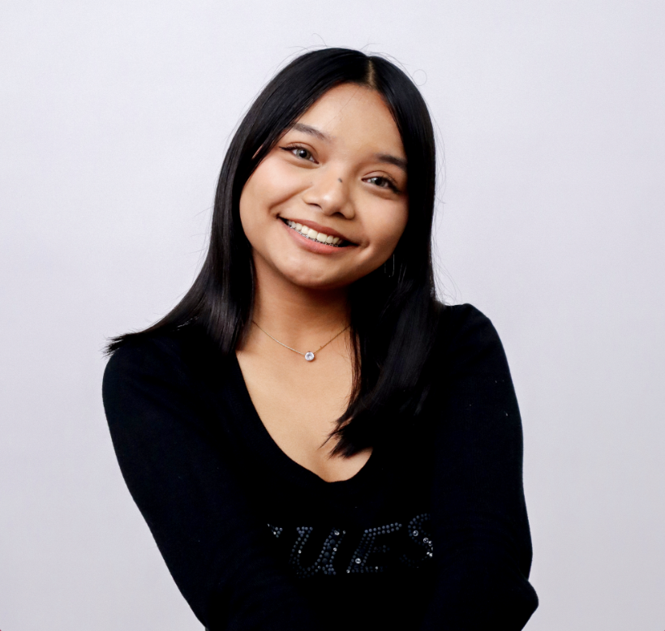

BSIT Sophomore
Polytechnic University of the Philippines
 Archive
Archive
Archive
Profile Record
BSIT Sophomore • UI/UX Designer • Frontend Developer
I design and build clean, user-centered digital experiences that are functional, accessible, and visually engaging.
Currently exploring the intersection of design and development through UI/UX, frontend development, and creative digital projects.

Polytechnic University of the Philippines
Designing and building digital experiences
5+ years in publication and visual design
Student projects, collaborations, and internships
About Me
I started exploring visual communication through publication materials, social media graphics, and youth media projects. Over the years, I worked on creative campaigns, branding materials, event publicity, and digital content for various organizations.
As I continued creating designs, I became increasingly curious about the systems and interfaces behind them. That curiosity eventually led me to pursue Information Technology and explore how meaningful digital experiences are designed and built.
Today, I combine my background in visual design with growing technical skills in UI/UX and frontend development, focusing on creating experiences that are both functional and visually engaging.
Journey
Started exploring graphic design and creative media.
Created publication materials, social media graphics, and visual campaigns.
Began my BSIT journey at Polytechnic University of the Philippines.
Exploring UI/UX design, frontend development, and user-centered digital experiences.
Education
Bachelor of Science in Information Technology
Senior High School - STEM Strand
Organizations
Design Committee Assistant Head
Creating publication materials, event branding, and digital assets for organization initiatives.
Design Committee Member
Multimedia Team
Senior Multimedia Officer
Creative Foundation
Before transitioning into UI/UX and frontend development, I spent several years creating publication materials, social media campaigns, event branding, and visual communication assets.
Technical Skills
HTML, CSS, JavaScript, Bootstrap
PHP, MySQL
Figma, Adobe Photoshop, Canva
Git, GitHub, VS Code
English, Filipino
Fun Fact
I never expected that learning basic HTML in Grade 7, something I initially saw as just another school requirement, would eventually become part of the path I chose in college.
Before discovering my passion for technology and design, I actually thought I would pursue a career in medicine. Looking back, that early exposure to web development became the first step toward the field I enjoy today.
Contact
Whether it's a design project, a website, or a creative collaboration, I'd love to connect.
magpayo.shemaiahezra@gmail.com shemaiahezrabmagpayo@iskolarngbayan.pup.edu.ph